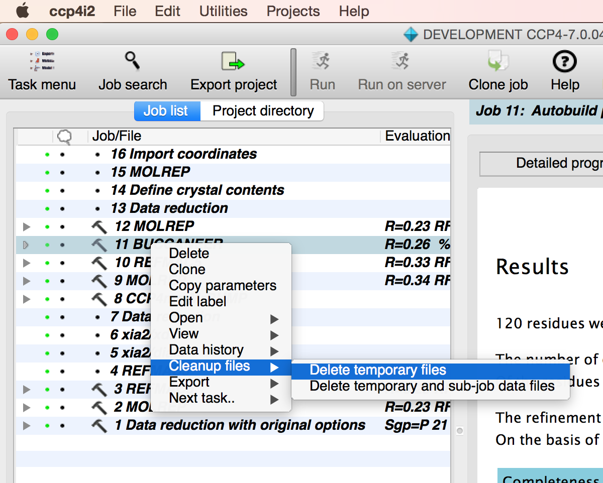

Some jobs create large numbers of intermediate files. You can clean-up unwanted intermediate files when the job is completed by right-clicking on the job in the Job List and going to the "Cleanup files" menu entry.
